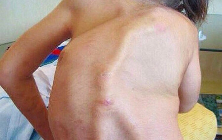
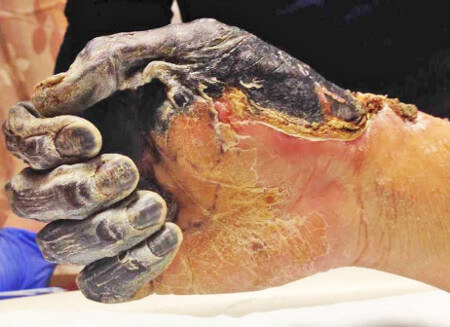

Dl. Prof. Stoica: ”De ce tratați ani la rând articulațiile, dacă puteți să le
recuperați în 3 săptămâni!”
Despre contribuția Prof. Stoica în tratamentul bolilor articulare și cum să obțineți medicamentul pentru recuperarea articulațiilor la preț de doar , citiți în articol
În anul 2019, grupul de cercetare în frunte cu Dl. Stoica a efectuat o serie de teste de laborator ale unui medicament inovator pentru articulații. Rezultatele au depășit toate așteptările. Analiza comparativă a medicamentului inventat de profesor cu cele mai populare produse farmaceutice nu a lăsat nici o îndoială - începuse o nouă eră în domeniul reumatologiei! Cercetătorii au depus actele pentru înregistrarea medicamentului și o cerere pentru lansare acestuia în producție. Dar s-a produs o nenorocire. Dl. Prof. Stoica a decedat. Este adevărat că medicamentul nu va ieși pe piață? Reporterul nostru a adresat această întrebare Dl. Șerban Tomescu, specialist principal în reumatologie, care a participat la cercetările medicamentului.
Iată ce a comentat specialistul principal în reumatologie, Dl. Șerban Tomescu. ”Șocul provocat de moartea subită a dlui. profesor a trecut și ne-am angajat să aducem până la bun sfârșit lucrarea vieții sale.”
Reporter: Bună ziua, Dle. Șerban. La ce etapă se află cercetările medicamentului?
Dl. Tomescu: Bună ziua, Ovidiu. Sunt bucuros să te anunț că după efectuarea cercetărilor, am primit aprobarea să introducem acest produs în sistemul medical. Medicamentul a primit denumirea , în traducere- Mișcare Liberă. Anume aceasta oferă produsul- substanțele din compoziția sa influențează benefic asupra articulațiilor, iar mișcarea nu mai provoacă durere și disconfort. Începeți să vă mișcați liber!
Studiile clinice au demonstrat eficacitatea ridicată în tratamentul articulațiilor - conform estimărilor, acest medicament va prelungi viața persoanelor cu boli articulare cu cel puțin 10 ani!
Reporter: Dle. Șerban, vă rog să ne povestiți prin ce se deosebește de produsele farmaceutice cu care ne-am obișnuit deja?
Dl. Tomescu: De regulă, pacienților ce suferă de boli articulare li se recomandă unul din următoarele medicamente:
- Diprophos;
- Diclofenac;
- Dexametazonă;
- Aflutop;
- Movalis;
- Mydocalm;
- Meloxicam;
- Prednisolon;
- Teraflex;
- Mukosat;
- Airtal;
- Hondrogard;
- Artra;
- Artrozan;
- Fermaton;
- Celebrex;
- Diafleks;
- Hondrolon;
- Sirdalud;
- Ketoralac;
- Hodroksid;
- Flamaks;
- Alopurinol;
- Alflutop;
- Flexen;
- Fermaton plus;
- Artrozilen.
Să analizăm complicațiile provocate de afecțiunile articulațiilor. Cele mai răspândite afecțiuni articulare:
| Afecțiune | Complicații la stadiul incipient | Complicații la stadiul avansat |
|---|---|---|
| Artrita | Necroza cartilajului, distrugerea articulațiilor, sinovită | Distrugerea completă a articulației, sepsisul, cancerul articulației |
| Artroza | Inflamația cartilajului, modificările structurii și degradarea articulației, există riscul de infecția sângelui | Dizabilitate (cedarea articulației), distrugerea cartilajului, cancerul articulației |
| Osteocondroza | Proeminențele intervertebrale, deplasarea discului intervertebral, compresia nervoasă | Hernia coloanei vertebrale, tulburări ale sistemului nervos central, riscul cedării unor organe, cancerului coloanei vertebrale |
| Coxartroza | Creșterea oaselor, modificări degenerative ale cartilajului și articulațiilor, modificări distrofice ale pungilor articulare | Limitarea activității motorii (handicap gradul 1 sau 2), tumori canceroase |
| Osteoporoză | Necroza țesutul conjunctiv, necroza osoasă (crește fragilitatea oaselor) | Deformarea oaselor și a scheletului în ansamblu, imobilitatea membrelor, există riscul apariției cancerului datorat necrozei osoase |
| Bursită | Inflamația sacului sinovial periarticular, acumularea de exudat purulent | Contaminarea sângelui, articulația cedează, putrezirea țesutului muscular, tumori maligne |
| Gută | Inflamația articulației tălpii, depunerea sărurilor, concentrarea cristalelor de urină în țesutul osos | Formarea ”ciocurilor” pe picior și creșterea lor, modificarea dimensiunii articulației, necroza oaselor piciorului, apariția tumorilor benigne |
După cum puteți vedea, bolile articulațiilor duc adesea la complicații grave ce se soldează
adesea cu handicap sau moartea pacientului. În ultimii 100 de ani, sarcina exercitată asupra
scheletului uman a crescut intensiv. În consecință, majoritatea persoanelor cu vârsta peste
25
ani au una sau câteva articulații afectate. Până la vârsta de 35-40 ani, bolile trec în
stadiul
avansat, prezentând complicații grave.
Priviți aceste fotografii, făcute în spitale:
1. Articulația genunchiului unui pacient ce suferă de artroză care a urmat un tratament cu metode ”clasice”. Injecțiile i-au calmat durerea pentru o perioadă scurtă de timp. Dar n-au frânat dezvoltarea bolii. Rezultatul a fost amputarea picioarelor. Pacientul a devenit invalid pentru tot restul vieții.

2. Consecințele osteocondrozei, boala nu a fost tratată, a fost calmată durerea. S-au dezvoltat hernii din care mai târziu au apărut 2 tumori canceroase. Medicii au încercat să salveze pacienta cu ajutorul unei intervenții chirurgicale, dar n-a ajutat, femeia a decedat.

3. Consecințele artritei mâinii. După cum bine vă dați seama, situația în care s-a declanșat un proces inflamator și a început sepsisul nu mai poate fi schimbată. Pacientului i-a fost amputată palma și o parte a mâinii. Dar aceasta nu l-a salvat, sepsisul s-a răspândit în continuare și bărbatul a decedat peste 6 luni.

Să revenim la o notă pozitivă. Dl. Prof. Stoica, pe lângă cercetările medicale, a studiat de-a lungul deceniilor medicina naturistă, în special secretele longevității și sănătății. Toate cunoștințele profesorului și experiența de cercetare a institutelor de cercetare științifică sunt unite în produsul lansat de noi - Motion Free. Substanțele naturale din compoziția s-au dovedit a fi capabile să ofere FACTORUL PRINCIPAL al tratamentului - alimentarea cu sânge a articulației afectate. Este necesar să se asigure restabilirea alimentării cu sânge pentru a opri necroza și inflamația, declanșând simultan procesul de regenerare. Pare a fi ușor, dar nici un medicament existent n-a reușit să pună în aplicare acest lucru. Acum există un astfel de medicament, în plus, după finalizarea studiilor clinice, acesta este distribuit la preț de doar în cadrul unui program special.
Înainte ca medicamentul să fi fost selectat pentru a fi distribuit în cadrul programului, au fost efectuate studii clinice la scară largă. Au participat 10.120 persoane din diferite grupuri de vârstă cu diferite boli articulare. 93,8% s-au vindecat complet. 5,6% prezintă unele probleme, dar, în general, starea lor sa îmbunătățit semnificativ. Aceasta înseamnă că pacienții cu artrită care se deplasau cu dificultate, după tratament au rămas cu dureri articulare periodice. Doar 0,6% au prezentat rezultate pozitive, deși nu s-au vindecat complet.
Reporter: Am auzit bine? Distribuiți acest produs minunat la preț de doar ?
Dl. Tomescu: Exact. În memoria Prof. Stoica am organizat un fond care poartă numele său, am primit finanțare și am lansat un program comun de reabilitare. Sponsorii Academiei de Reumatologie au alocat 370 mii lei și 17 mii fonduri comerciale. Iată de ce avem posibilitatea să răspândim la preț de doar , pe când prețul întreg este de per cutie. Și da, într-adevăr funcționează. Am participat personal la studiile clinice și pot confirma - medicamentul este extrem de eficient.
Disc articular normal
Disc articular modificat din cauza degenerării
Disc articular ieșit în afară
Disc articular deplasat
Subțierea discului articular
Degenerarea discului articular cu osteofite

Aș dori să demonstrez rezultatele studiilor clinice ale remediului . Acestea au surprins plăcut mulți medici. Pentru pacienții cu dureri articulare persistente va fi o adevărată salvare:

100% din participanți au notat calmarea durerii peste 8-10 minute

98% din participanții la studiu au menționat recuperarea țesutului cartilaginos după tratamentul cu

93% dintre participanții la studiu au vindecat artrita și artroza după tratament
Acestea sunt imaginile articulațiilor ”înainte” și ”după” tratamentul cu


Reporter: Impresionant. Spuneți-ne ce înseamnă aceasta pentru pacienții ce suferă de boli articulare?
Dl. Tomescu: Aceasta înseamnă că medicina germană a făcut un avânt important și veți avea șansa să vindecați afecțiunile la domiciliu în 1-2 luni. nu amorțește sau calmează durerea, ci recuperează organismul la nivel celular. Înlătură cauza durerii și readuce articulațiile, coloana vertebrală la starea lor normală. În afară de eliminarea simptomelor, produsul nimicește cauza bolii - dereglarea alimentării cu sânge a țesutului cartilaginos.
declanșează sistemul regenerării organismului chiar din prima zi de tratament. Veți simți imediat cum pleacă durerea. Tratamentul durează 2-3 săptămâni.
Reporter: este eficient doar în cazul afecțiunilor enumerate mai sus?
Dl. Tomescu: Sigur că nu! Am menționat că acționează la nivel celular, restabilind circulația sanguină. Vindecă orice afecțiune legată de articulații și coloana vertebrală: artroza, artrita, osteoporoza, reumatismul, guta, sciatica și osteocondroza, deplasarea discurilor vertebrale. Orice boală a articulațiilor la orice stadiu.
Reporter: Este adevărat că produsul vindecă aceste boli, nu doar calmează durerea?
Dl. Tomescu: calmează durerea articulară (la stadiul incipient) și nimicește complet boala. Bineînțeles că există și alte opțiuni de tratament, de regulă, însă, sunt asociate cu intervențiile chirurgicale, fiind periculoase pentru organism. Intervenția chirurgicală la articulația genunchiului, de exemplu, este foarte scumpă, fiind accesibilă pentru puțini pacienți.
Certificatul de confirmare a eficienței
Reporter: În ce mod pot primi pacienții în cadrul programului, la preț de ? O poate face oricine?
Dl. Tomescu: Da, absolut oricine. Există un singur impediment- în legătură cu volumul mic de producție, programul acționează selectiv. Doritorii pot plasa o cerere și vor primi la preț de doar . Tot ce trebuie să faceți este să introduceți numele și telefonul de contact, iar colaboratorii centrului consultativ al programului vor lua legătura cu Dvs.
Reporter: În ce perioadă își va desfășura activitatea programul?
Dl. Tomescu: Termenul finisării programului - (inclusiv). Până la această dată este necesar să plasați o cerere pentru . Dacă nu ați făcut încă acest lucru, vă sfătuiesc să vă grăbiți, doearece mai târziu va fi imposibil să primiți produsul la preț de . Garantez personal că toate cererile plasate până la termenul limită vor fi procesate și oamenii își vor primi medicamentul.
Dle. Șerban, vă mulțumesc pentru interviu! Doriți să mai adăugați ceva pentru cititorii noștri?
Dl. Tomescu: Da, aș dori să atenționez cititorii că afecțiunile articulare și ale spatelui ”întineresc”, chiar și durerile periodice sunt un motiv pentru a acorda atenție problemei. Doctorii nu vor insista să vă trateze. Trebuie să aveți grijă de sănătatea Dvs.
Memorizați: bolile cauzate de dureri de spate și articulații nu duc doar la disconfort. Ele scurtează viața cu 15-20 de ani.


Cu respect, Șerban Tomescu.


Cu respect, Șerban Tomescu.
Cu respect, Șerban Tomescu.


Au condiții excelente. Grăbiți-vă!
Am cumpărat pe site-ul oficial, au luat legătura cu mine pentru a confirma comanda. Îmi doresc să uit de durerea de spate și să fac plimbări lungi pe jos.)


Cu respect, Șerban Tomescu.


Cu respect, Șerban Tomescu.


Aveți grijă și feriți-vă de produse contrafăcute.
Cu respect, Șerban Tomescu.